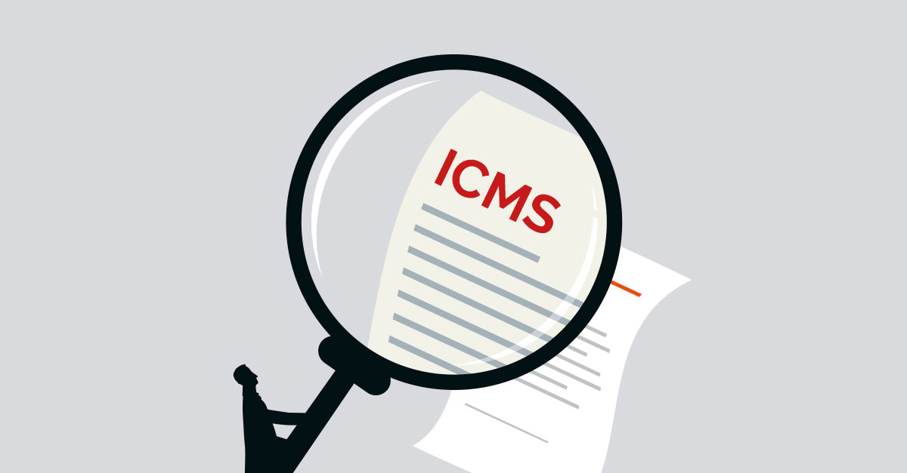

X
TÓPICOS
Atividades de extensão
Concursos
Contas regionais
Cursos
Popular
Últimas
Especial
Fundação João Pinheiro divulga análise sobre o mercado de trabalho mineiro no primeiro trimestre de 2020
Fundação João Pinheiro mantém cálculo de distribuição do ICMS disponível para consulta em site

Observatório das Desigualdades analisa como a Covid-19 impacta os diferentes segmentos sociais
FJP faz análise dos investimentos anunciados para Minas Gerais entre 2010 e 2019
Início
Seguir
Favoritos
Pesquisar